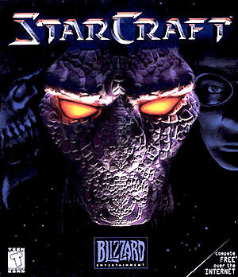
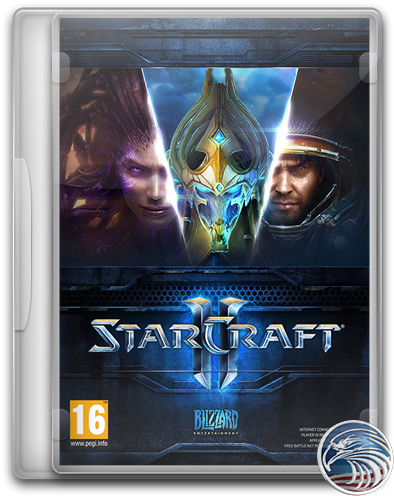
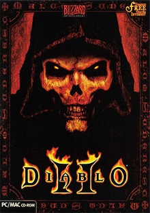
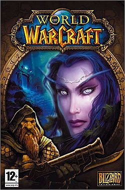
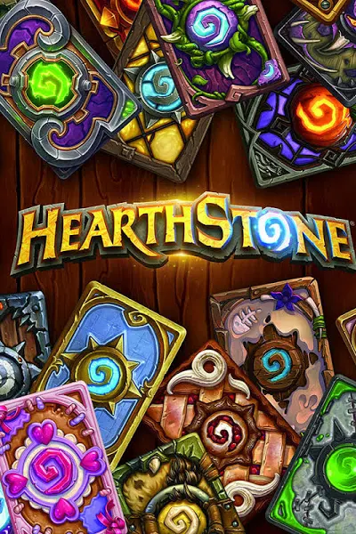

| Foto | Descrição | Preço (R$) | Quantidade disponível |
|---|---|---|---|
|  | StarCraft I é uma franquia de ficção científica militar criada por Chris Metzen e James Phinney, e de propriedade da Blizzard Entertainment. | Gratuito | 10 |
|  | StarCraft II Full Collection é um jogo eletrônico para computador de estratégia e ficção científica militar, desenvolvido pela Blizzard Entertainment, um estúdio americano, como a sequência direta de StarCraft, jogo aclamado pela crítica e público. | 120 | 20 |
|  | Diablo II: Resurrected é um jogo de RPG de ação co-desenvolvido pela Blizzard Entertainment e Vicarious Visions e publicado pela Blizzard Entertainment. É uma remasterização de Diablo II e sua expansão Lord of Destruction. | 125 | 40 |
|  | World of Warcraft é um jogo on-line do gênero MMORPG, desenvolvido e distribuído pela produtora Blizzard Entertainment e lançado em 2004. O jogo se passa no mundo fantástico de Azeroth, introduzido no primeiro jogo da série, Warcraft: Orcs & Humans, lançado em 1994. | 179 | 20 |
|  | Hearthstone, originalmente conhecido como Hearthstone: Heroes of Warcraft, é um jogo de cartas estratégico on-line desenvolvido e publicado pela empresa Blizzard Entertainment. É o primeiro jogo da empresa gratuito e também o primeiro a ser lançado para plataformas móveis. | Gratuito | 10 |